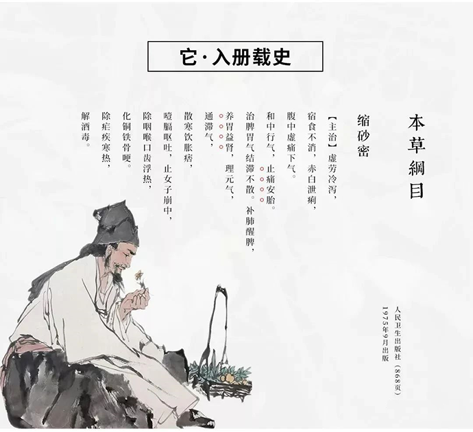
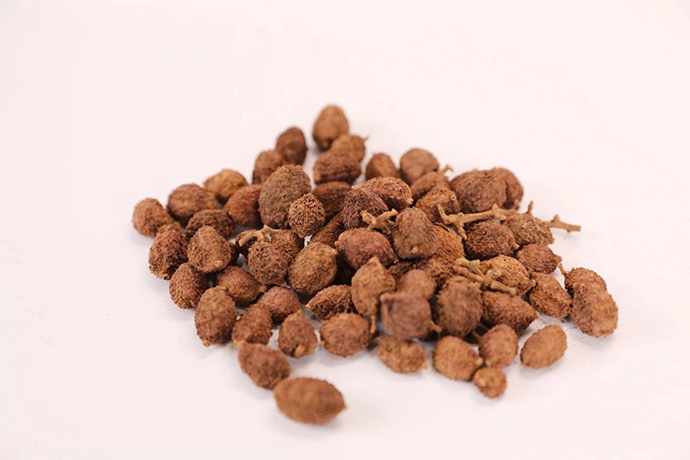
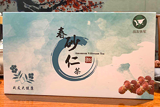
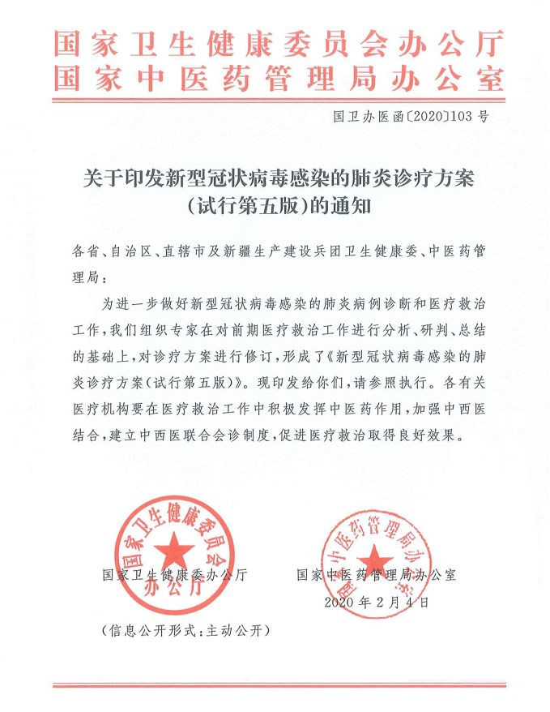
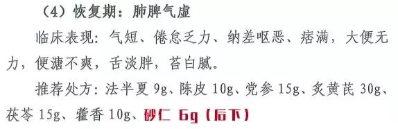

春砂仁
“本草有灵，尽其物性”，有一种植物一直被称为南药瑰宝，《本草纲目》中记载此药材可健脾、化滞、消食，是行气和中、和胃醒脾的温中和气之药也。
它已有1300多年的历史，被誉为“四大南药”之一，且被历代封建王朝列为贡品，是我国著名的药、食两用植物，后被立法保护的8种广东岭南中药材之一。
这种可以“济世救人、暖人脾胃”的中药材便是春砂仁。冲泡代茶或是煲汤入膳，能够温脾止泻，化湿开胃，尤其适合高强度工作的现代人。
砂仁，要选就选原产地阳春春砂仁
“北有高丽参，南有春砂仁”。春砂仁是我国四大南药之首。明朝药圣李时珍为寻圣药，发现世界黄金产地金花坑中的春砂仁具有补肺健脾、养胃益肾、和气行中，止痛安胎等功效，随即将其记载入《本草纲目》流传于世。自清乾隆年间开始，金花坑春砂仁被历代皇室列为贡品。
治胃贡品，闲话春砂仁
清乾隆年间，乾隆最宠爱的容妃刚进宫之后，依然保持着自己的生活起居和饮食习惯，但因为水土不服，经常腹胀、肚痛而茶饭不思，导致精神萎靡不振。御医虽多次切问，用尽良方依然不得病除，容妃愈发憔悴清瘦，乾隆心中甚是担忧，并诏令天下名医良药。
后得广州官员进贡阳春县的砂仁，其“吸纳天地之灵气，日月之精华”。听闻此药蔽浓阴而居，伴虫鸣而栖，悦风声而眠，引流水而润。给容妃服用之后，果然药到病除，荣光焕发，乾隆大喜，当即褒奖为“回春之药”，赐名“春砂仁”，从此阳春县所产砂仁成为皇室之“贡品”。
因阳春县砂仁具有“化湿开胃、温脾止泻、理气安胎、通滞气、补肺益肾、除咽喉口齿浮热、化铜铁骨哽”等。同时对生长条件极为苛刻，因此被称为“南药瑰宝”，民间更有“北有高丽参，南有春砂仁”的盛誉，而春砂仁为乾隆帝爱妃祛病除害的传奇故事亦广为流传，并引为一段佳话。
国家卫健委：
砂仁作为中药纳入第五版新型冠状病毒诊疗方案
在国家中医药管理局与国家卫健委在公布的《新型冠状病毒感染的肺炎诊疗方案（试行第五版）》中，明确表示新型冠状病毒感染的肺炎属于中医疫病范畴，病因为感受疫戾之气，病位在肺，基本病机特点为“湿、热、毒、瘀”；各地可根据病情、当地气候特点以及不同体质等情况，可参照推荐的方案进行辨证论治，并给出了临床治疗中各期间的推荐处方，其中砂仁列入了新型冠状病毒感染者恢复期的处方！
最好的佳品献给最可爱的人~致敬抗疫英雄们！
--战友大健康抗疫佳品【战友铁军春砂仁茶】
清肺 健脾 护胃 抗病毒